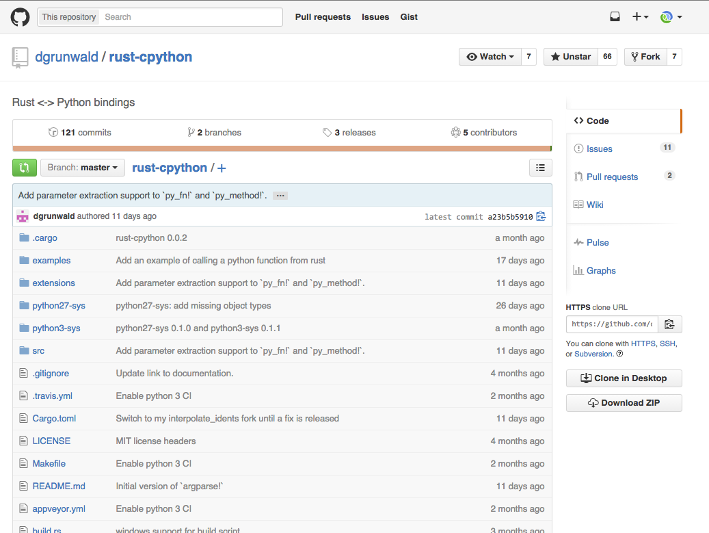
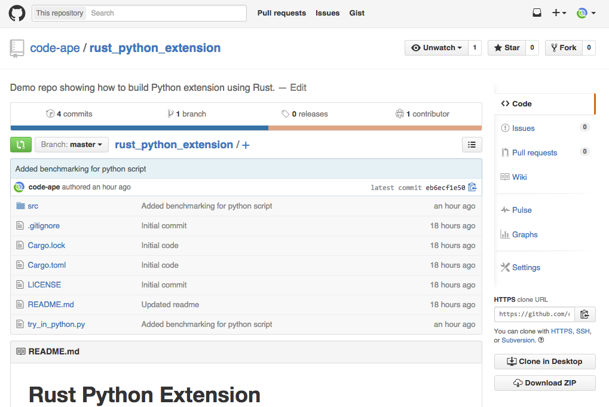

Interactive Intro to Rust Lang
Created by Ferris /
@im_ferris
available at code-ape.github.io/intro_to_rust_slides

Click on photo to go to repo. 
Things I left Out
Cargo
Traits
Macros
Arc and Rc
Anonymous Functions
Modules
Features
A lot more!